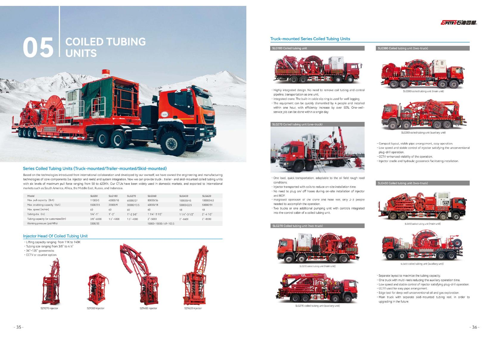
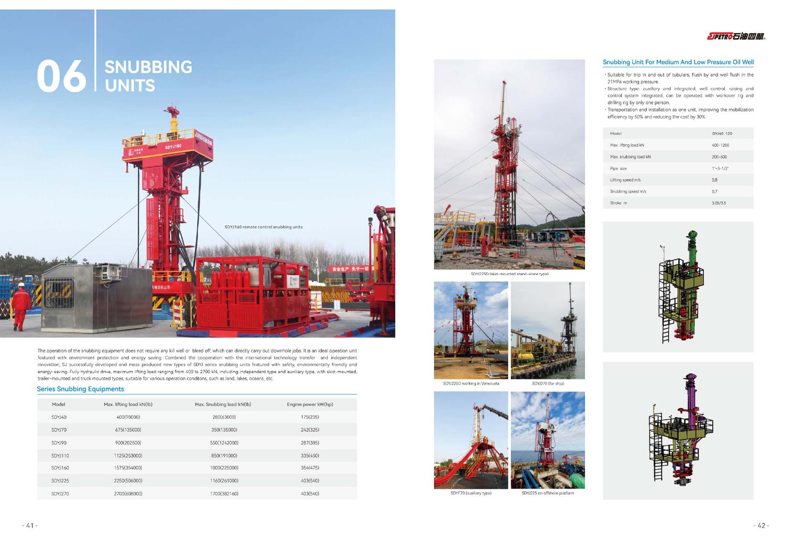
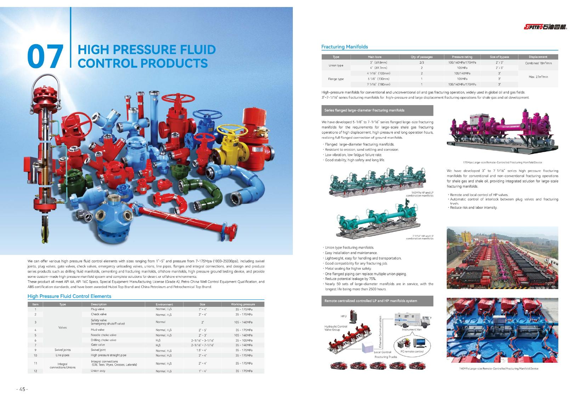
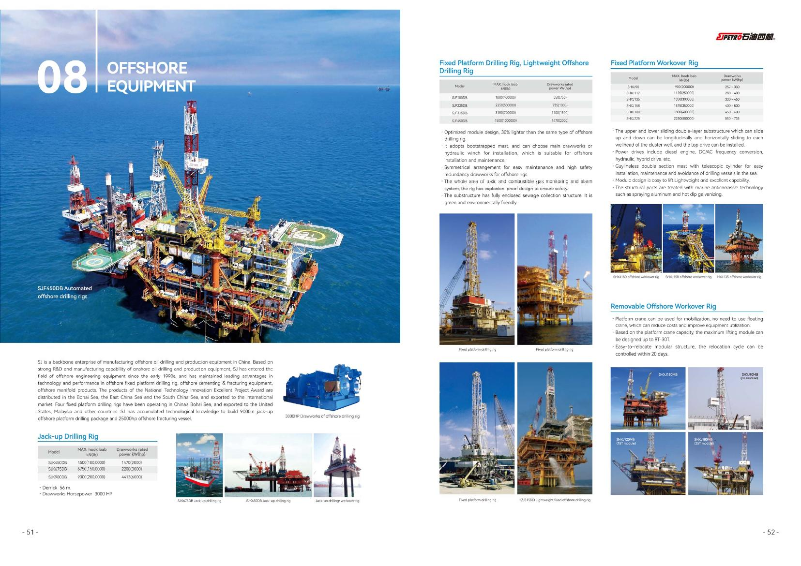

线上产品目录Online Product Catalogue
八大类油田装备，按品类查型、按参数询价。 Eight oilfield equipment categories, organized for model search and inquiry.
以下八大类均为 SJ 石油四机（SJPETRO）原厂产品，按旗舰型号与关键参数列出。从钻井、固井、修井、压裂，到连续油管、不压井、高压流体控制与海洋装备，成套供货、直达井场。 All eight categories below are original SJPETRO products, listed with flagship models and key parameters. From drilling, cementing, workover and fracturing to coiled tubing, snubbing, high-pressure fluid control and offshore equipment — supplied as complete packages, delivered to the wellsite.

产品分类Categories
先选品类，再看型号和参数。Start with a category, then review models and specifications.






01
钻井设备Drilling Equipment
Series modularized drilling rigs ZJ30–ZJ90
系列化模块钻机，三种动力可选（电驱 / 复合 / 机械），含钻机自动化系统与泥浆泵。 Series modularized drilling rigs with three drive options (electric / compound / mechanical), including rig automation systems and mud pumps.
| Model | 名义钻深Depth (m) | 最大钩载Hookload (kN) | 绞车功率Drawworks (hp) |
|---|---|---|---|
| SZJ180 (ZJ30) | 3000 | 1800 | 800 |
| SZJ225 (ZJ40) | 4000 | 2250 | 1100 |
| SZJ315 (ZJ50) | 5000 | 3150 | 1470 |
| SZJ450 (ZJ70) | 7000 | 4500 | 2000 |
| SZJ585 (ZJ80) | 8000 | 5850 | 2720 |
| SZJ675 (ZJ90) | 9000 | 6750 | 3000 |
电驱 / 复合 / 机械驱动Electric / compound / mechanical drive
钻机自动化系统Rig automation system
泥浆泵Mud pumps STP1600 / SQP2800
沙漠 / 低温 / 直升机钻机Desert / low-temp / heli-portable rigs
车装钻机Truck-mounted rigs
02
固井设备Cementing Equipment
Plunger pumps · ACM auto-mixing (5th gen)
中国最大固井装备研发制造基地，固井"单项冠军"。 China's largest cementing equipment R&D and manufacturing base, a "single champion" in cementing.
| Model | 输入功率Power (hp) | 冲程Stroke (in) | 最大冲次Max rate (rpm) |
|---|---|---|---|
| STP350 | 350 | 5 | 350 |
| STP400 | 600 | 8 | 350 |
| SQP1000 | 1000 | 6 | 450 |
| SQP2500L | 2000 | 6 | 330 |
| SQP2500 | 2500 | 8 | 330 |
ACM 自动混浆（第 5 代）ACM auto-mixing (5th gen)
固井车 / 撬Cementing trucks / skids SGJ350–SGJ2500
泡沫固井Foam cementing
连续配浆车Continuous mixing unit SHJC16
03
修井机Workover Rigs
2000+ built · 834 exported to 30+ countries
中国最大修井装备制造基地，产销与出口量国内第一。 China's largest workover equipment manufacturing base, ranked first domestically in output, sales and exports.
| Model | 名义钩载Nominal (kN) | 最大钩载Max (kN) | 发动机功率Engine (kW) |
|---|---|---|---|
| SXJ160 (XJ600) | 300 | 600 | 175 |
| SXJ350 (XJ900) | 600 | 900 | 287 |
| SXJ450 (XJ1100) | 800 | 1100 | 354 |
| SXJ550 (XJ1350) | 1000 | 1350 | 403 |
| SXJ650 (XJ1600) | 1200 | 1600 | 529 |
| SXJ1000 (XJ2250) | 1800 | 2250 | 940 |
全电动All-electric XJ350
超级电容修井机Supercapacitor workover rig
LNG / 柴电双驱LNG / diesel-electric dual drive
沙漠 / 山地 / 冷区修井机Desert / mountain / cold-region rigs
04
压裂设备Fracturing Equipment
Full-electric fracturing skids
世界一流压裂成套装备基地；柱塞泵 350–8000 hp。 A world-class complete fracturing equipment base; plunger pumps from 350 to 8000 hp.
| Model | 输出功率Output (hp) | 工作压力Pressure (MPa) | 排量Flow (m³/min) |
|---|---|---|---|
| SYL2500Q | 2500 | 140 | 1.6 |
| SYL5000Q | 5000 | 140 | 3.3 |
| SCF5000Q | 5000 | 140 | 2.4 |
| SYL6000Q | 6000 | 140 | 3.3 |
| SYL8000Q | 7600 | 140 | 2.6 |
柱塞泵Plunger pumps 350–8000 hp
混砂车Blenders SHS
压裂管汇Fracturing manifolds
CO₂ / 干法压裂CO₂ / dry fracturing
返排液处理Flowback treatment
05
连续油管作业机Coiled Tubing Units
In-house SZR-series injector heads
核心部件自主，车装 / 半挂 / 撬装，出口南美 / 非洲 / 中东 / 俄罗斯 / 印尼。 Self-developed core components; truck-mounted / semi-trailer / skid-mounted, exported to South America, Africa, the Middle East, Russia and Indonesia.
| Model | 最大拉力Max pull (t) | 最大下压Max snub (t) | 工作压力Pressure (MPa) |
|---|---|---|---|
| SLG50 | 5 | 2.5 | 35 |
| SLG180 | 18 | 9 | — |
| SLG270 | 27 | 13.5 | 69–103 |
| SLG360 | 36 | 18 | — |
| SLG450 | 45 | 22.5 | — |
| SLG620 | 63 | 31 | — |
注入头Injector heads SZR270–SZR620
车装 / 半挂 / 撬装Truck / semi-trailer / skid
电驱自动Electric automated SLG630DQ
06
不压井作业机Snubbing Units
Live-well (no-kill) operation
全液压带压作业，不停产即可修井，保障井控安全。 Fully hydraulic live-well operation, enabling workover without stopping production while safeguarding well control.
| Model | 最大提升Max lift (kN) | 最大下压Max snub (kN) | 发动机功率Engine (kW) |
|---|---|---|---|
| SDYJ40 | 400 | 280 | 175 |
| SDYJ70 | 675 | 350 | 242 |
| SDYJ90 | 900 | 550 | 287 |
| SDYJ110 | 1125 | 850 | 335 |
| SDYJ160 | 1575 | 1000 | 354 |
| SDYJ225 | 2250 | 1160 | 403 |
| SDYJ270 | 2700 | 1700 | 403 |
中低压 / 高压 / 深井油气井Low-med / high pressure / deep wells
遥控 / 自动化Remote-controlled / automated
海洋液压修井Offshore hydraulic workover XJY160–270
07
高压流体控制产品High Pressure Fluid Control
API 6A / 16C · 7–175 MPa (1000–25000 psi)
尺寸 1"–7 1/16"，符合 API 6A / 16C，ABS 认证。 Sizes from 1" to 7 1/16", compliant with API 6A / 16C and ABS certified.
| 类型Type | 环境Service | 尺寸Size | 工作压力Pressure (MPa) |
|---|---|---|---|
| 旋塞阀Plug valve | Normal / H₂S | 1"–4" | 35–175 |
| 闸阀Gate valve | H₂S | 2"–7" | 35–140 |
| 单流阀Check valve | Normal / H₂S | 2"–4" | 35–175 |
| 节流阀Choke valve | H₂S | 2"–3" | 35–105 |
| 旋转接头Swivel joint | Normal / H₂S | 1.5"–4" | 35–175 |
| 由壬Union | Normal / H₂S | 1"–4" | 35–175 |
压裂管汇Fracturing manifolds 3"–7 1/16"
175 MPa / 25000 psi
节流压井管汇Choke & kill manifolds
管线快卸装置Quick-release line connectors
08
海洋装备Offshore Equipment
Jack-up rigs · 25000 HP stimulation vessel
中国海洋钻采装备骨干；渤海 / 东海 / 南海，出口美国 / 马来西亚。 A backbone of China's offshore drilling and production equipment; deployed in the Bohai, East China and South China Seas, exported to the USA and Malaysia.
| Model | 类型Type | 钩载Hookload (kN) | 井架高度Derrick (m) |
|---|---|---|---|
| SJK450DB | 自升式Jack-up | 4500 | 56 |
| SJK675DB | 自升式Jack-up | 6750 | 56 |
| SJK900DB | 自升式Jack-up | 9000 | 56 |
| SJF180–450DB | 固定平台Fixed platform | 1800–4500 | — |
| SHXU90–225 | 平台修井Platform workover | 900–2250 | — |
25000 HP 海上增产船25000 HP offshore stimulation vessel (DP2 · 续航 60 天60-day endurance)
海洋固井 / 防砂Offshore cementing / sand control
自动化海洋钻 / 修机Automated offshore drilling / workover rigs